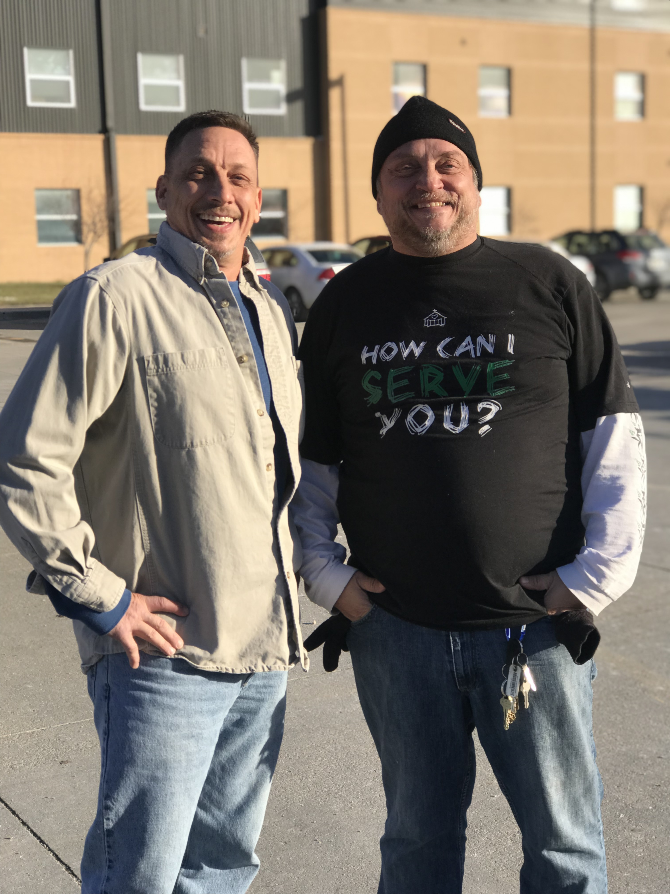

#GivingTuesday is a national organization celebrated the day after Cyber Monday, encouraging people to give back. Open Door Mission participated each year with a full-blown campaign. I had the opportunity to lead these campaigns. And as a non-profit goes, you get to do everything yourself. And I mean that in the best possible way. This is where I learned how to strategize, build campaign concepts, video, edit, write, photograph, interview, design, schedule, record, listen, lea rn and hear beautiful stories of men and women who had a life filled with a substance of some kind and have since gotten sober. This is also where I learned about the importance of working with people and being a team player. I learned here I am very team-oriented, and love collaborating with others to create something I couldn’t have created on my own.
**please note: While I did interview Glen for the story below, I did not write.
It was all too much. After trying to get his life together on his own strength, Glen didn’t see what he had to live for. He put the gun to his head and pulled the trigger, but nothing happened. Frustrated, Glen aimed at the wall and shot. Two policemen nearby heard the gunfire and intervened. God had intervened in an even bigger way. “I know God’s put me in a place where He’s wanted me for a long time,” said Glen. A hard life of drinking and drugs, DUIs and prison, sobering up and falling back had led to a serious rift between Glen and his wife. She gave him an ultimatum that he needed to seek treatment or move out, and when Glen was unable to stay sober on his own he was forced to leave, which led to that fateful night. After detoxing, Glen requested to be released to Open Door Mission. He first spoke with the Garland Thompson Men’s Center Director, Pat McKernan. “He told me there’s blessings here,” said Glen. “And that if you stick around long enough, you’ll see them.” So Glen decided to follow Pat’s advice, despite the first couple of months being very difficult. “I was so angry,” said Glen. “But with a renewed relationship with God, I now have an hourly conversation with Him for guidance and peace. I don’t think about my own despair anymore. All that matters is God has given me a purpose for tomorrow, which is to serve Him and share my testimony with others. I couldn’t have said that a year ago.” It has been one year since Glen pulled that trigger, and he certainly has been inspired for lasting change. He’s finishing up the WorkNet Program for job readiness and looks to graduate soon. This Thanksgiving he will be able to sit down with his formerly-estranged family, loved ones that he has been re-connecting and repairing relationships with. “I’ve been given all these tools to make a difference in my life through Open Door Mission. Tools to change my mind, heart, and self. I’m now happy I am who I am. There’s lots of love here. It’s easy to appreciate life when you’ve been as close to losing it as I have.”